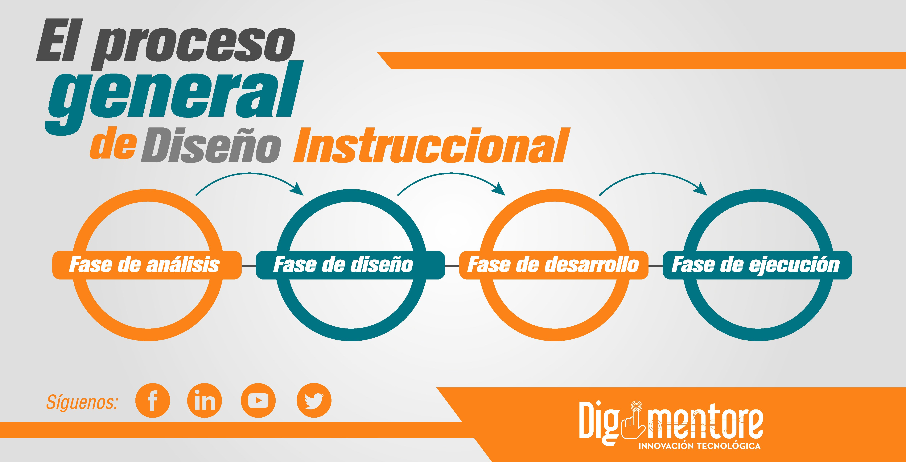

Diseño Instruccional
El diseño instruccional organiza y estructura los contenidos educativos para crear experiencias de aprendizaje efectivas y motivadoras dentro del software.
Organización y enfoques educativos
El diseño instruccional organiza y transforma los contenidos en experiencias de aprendizaje claras, atractivas y accesibles. Se seleccionan teorías y enfoques educativos como el aprendizaje constructivista, basado en problemas o con gamificación, según el público objetivo. El propósito es que el estudiante comprenda, aplique y consolide los conocimientos con actividades significativas.
También define la secuencia de contenidos, desde lo más simple a lo más complejo, dividiéndolos en módulos o niveles. Además determina actividades como ejercicios, simulaciones, preguntas guiadas, prácticas repetitivas o dinámicas colaborativas, cada una con un propósito pedagógico concreto.
Retroalimentación y evaluación
El diseño instruccional establece cómo se dará la retroalimentación: inmediata o diferida, explicativa o motivadora. También define evaluaciones diagnósticas, formativas y sumativas, que permiten medir el progreso y detectar dificultades. Un buen diseño instruccional no solo transmite información, sino que acompaña al estudiante con apoyo, guía y desafíos adecuados.